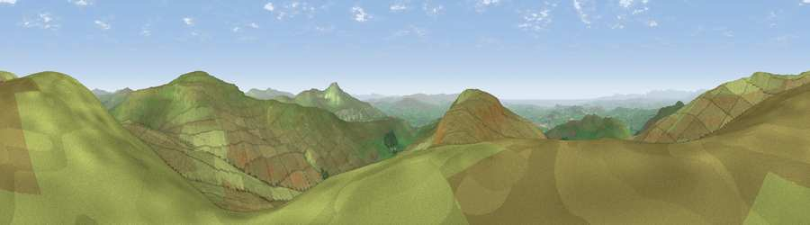

Viewpoint near Dent
#2753 in England · top 4% of its area beats it · near DentThe view, rendered

A 360° render of this exact spot computed from the terrain model, tree cover and land cover — summer colours, afternoon light, calibrated against photographs of famous viewpoints. Real trees, hedges and buildings will differ in detail.
The panorama
Grey silhouette: terrain skyline in each direction (720 bearings, Earth curvature and refraction included). Dashed green: skyline with trees (+15 m) and buildings (+8 m) as obstacles. Blue strip: how far the ground is visible on each bearing.
Where the view opens
Wedge length = distance to the farthest visible ground on that bearing (vegetation-aware). Rings at 10, 25 and 50 km.
What fills the view
97% grassland · 2% woodland ·
Angular shares of the visible panorama (visual magnitude), not map area. Landscape diversity 0.06 (0–1 Shannon).
Key numbers
More beautiful places nearby
The staircase of upgrades: each row has a higher view potential than everything closer. Driving times are estimates from straight-line distance, calibrated against real road routing — check an actual route before setting out.
| Place | Direction | Drive | Score |
|---|---|---|---|
| Crag Hill | NNW · 2 km | ~6 min | 80.0 |
| Warton Crag | WSW · 23 km | ~37 min | 83.2 |
| Viewpoint near Grange-over-Sands | W · 31 km | ~48 min | 83.4 |
| Viewpoint near Finsthwaite | WNW · 32 km | ~49 min | 90.3 |
| The Knoll | S · 394 km | ~377 min | 91.0 |
54.22676, -2.46051 · source: screening · position refined by local search. Computed location — check access rights before visiting.